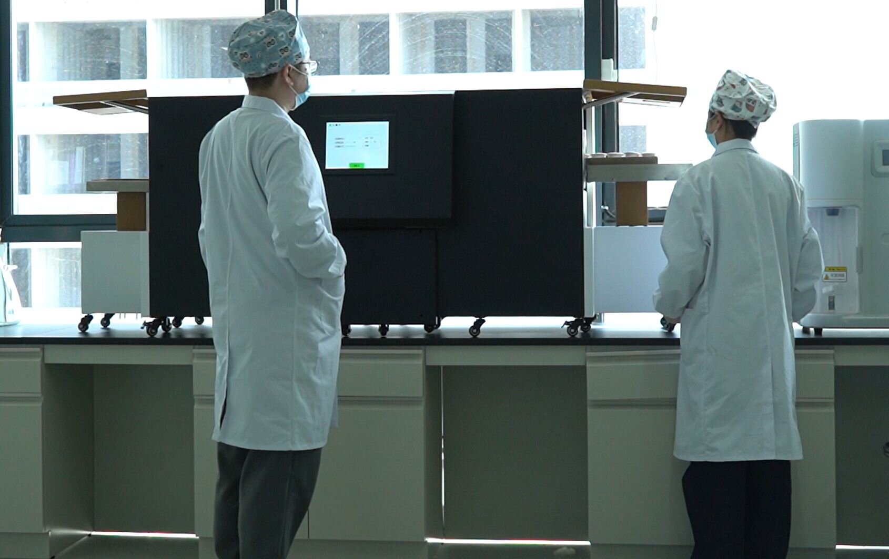
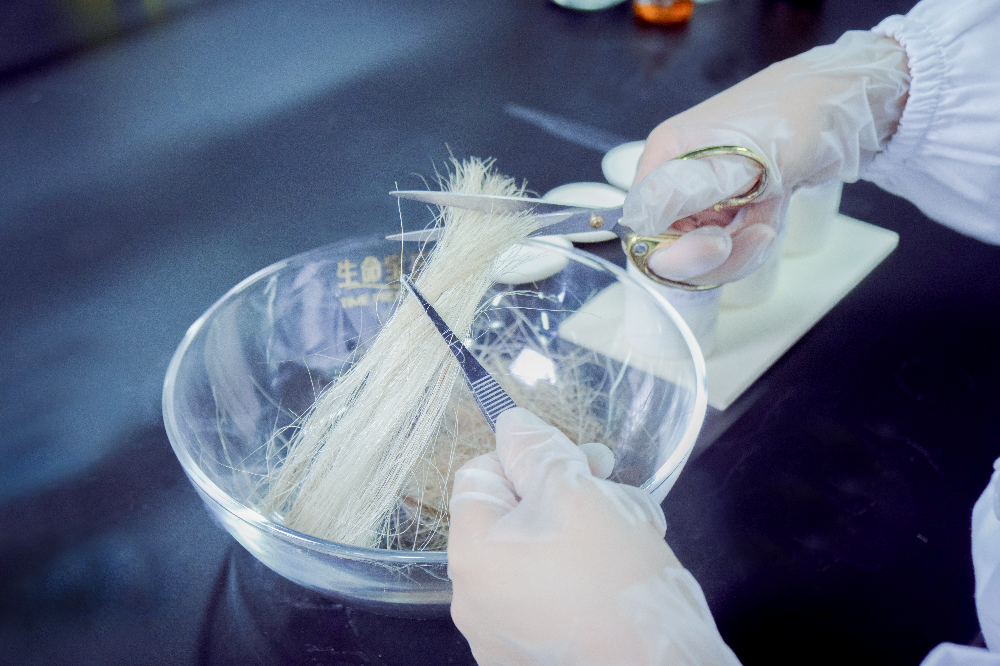

The stability of the diamond crystal lattice under extreme pressure defines the fundamental feasibility of HPHT memorial diamond synthesis. At operating conditions exceeding 5 GPa and 1,300°C, the carbon atoms must maintain their tetrahedral sp³ bonding configuration against thermodynamic forces that favor the graphite allotrope. This article examines the physics of lattice stability under HPHT conditions, the mechanisms of defect formation and propagation, and the process engineering protocols that ensure structural integrity in memorial diamonds manufactured from biological carbon sources.
Quick Answer
Diamond crystal lattice remains stable at HPHT synthesis conditions of 5.0–6.0 GPa and 1,300–1,500°C due to diamond's bulk modulus of 443 GPa—diamond compresses only 1.1% under 5 GPa. Lattice integrity is threatened not by absolute pressure but by non-hydrostatic stress, thermal gradients, and impurity-induced defects. BioGem Lab maintains dislocation densities of 10⁴–10⁵ cm⁻² through controlled seed selection, graded cooling at 25–30°C/minute, and nitrogen gettering via Mn-rich catalysts, achieving VS1–VVS2 clarity in routine production.
The Diamond Lattice: Structural Fundamentals
The diamond crystal lattice belongs to the face-centered cubic (FCC) Bravais lattice with a two-atom basis, space group Fd3̄m. Each carbon atom is tetrahedrally bonded to four nearest neighbors at a distance of 1.544 Å, with a lattice constant of 3.567 Å at standard temperature and pressure. The sp³ hybridization creates a rigid three-dimensional network with a coordination number of 4, in contrast to the planar hexagonal layering of graphite (sp², coordination 3).
The mechanical stability of this lattice derives from the strength and directionality of the C–C covalent bond. The bond energy is approximately 347 kJ/mol, and the force constant for bond stretching is 440 N/m. These values translate to exceptional mechanical properties: a bulk modulus of 443 GPa, a Young's modulus of 1,220 GPa, and a hardness of 10 on the Mohs scale. Under hydrostatic compression, diamond is the least compressible known material—the lattice parameter decreases by only 0.35% per GPa of applied pressure.
However, the stability of the diamond lattice is not absolute. It is a metastable phase at ambient conditions; the Gibbs free energy of diamond exceeds that of graphite by approximately 2.9 kJ/mol at 298 K and 1 atm. The diamond-to-graphite transition is kinetically inhibited at room temperature by the high activation energy required to break sp³ bonds and reform sp² networks (approximately 730 kJ/mol). At elevated temperatures, this kinetic barrier diminishes, and the thermodynamic driving force for graphitization becomes significant. HPHT synthesis operates in the region of the carbon phase diagram where diamond is the thermodynamically stable phase, but the proximity to the phase boundary demands precise control of pressure and temperature to prevent reversion.
The Carbon Phase Diagram and HPHT Operating Window
The equilibrium boundary between graphite and diamond in the carbon phase diagram is described by the Berman-Simon line, which approximates the pressure-temperature relationship as P(GPa) = 0.0027T(°C) + 0.71. Below this line, graphite is the stable phase; above it, diamond is stable. At 1,350°C—the typical operating temperature for memorial diamond synthesis—the equilibrium pressure is approximately 4.4 GPa. Industrial HPHT systems operate at 5.0–6.0 GPa, providing a thermodynamic safety margin of 0.6–1.6 GPa above the equilibrium line.
This safety margin is essential because the effective pressure experienced by the growing diamond crystal is not uniform. The cubic press anvils generate a quasi-hydrostatic pressure field with superimposed deviatoric (non-hydrostatic) stress components. Deviatoric stresses arise from geometric imperfections in the anvil alignment, thermal gradients within the growth cell, and the differential compressibility of the diamond crystal, the metal catalyst, and the surrounding pressure medium (typically pyrophyllite or hexagonal boron nitride). Local stress concentrations can exceed the mean cell pressure by 10–20%, creating regions where the effective pressure transiently falls below the Berman-Simon threshold.
The operating window for stable diamond growth is further constrained by the liquidus line of the Ni-Mn-Co catalyst. The catalyst must remain in the liquid state to transport carbon from the source to the seed crystal. At 5.5 GPa, the Ni-Mn-Co eutectic melts at approximately 1,310°C. Growth temperatures below this value produce incomplete carbon transport and stunted crystal development; temperatures above 1,450°C risk catalyst boiling, chamber contamination, and excessive nitrogen incorporation. The practical operating envelope is therefore bounded by the Berman-Simon line below, the catalyst liquidus below, and thermal degradation limits above—a narrow window of approximately 40°C vertically and 0.5 GPa horizontally.
Lattice Defects: Formation Mechanisms and Classification
Defects in the diamond lattice are classified by dimensionality: point defects (0D), line defects (1D), planar defects (2D), and volume defects (3D). Each defect type introduces localized strain fields that disturb the periodic potential of the crystal, altering optical, thermal, and mechanical properties. In memorial diamond production, defect control is the primary determinant of clarity grade, color grade, and structural durability.
Point defects include vacancies (missing carbon atoms), interstitials (extra carbon atoms in non-lattice sites), and substitutional impurities (nitrogen, boron, phosphorus, nickel). The most prevalent point defect in HPHT diamonds is the single substitutional nitrogen center (C center), which introduces a localized electronic state 1.7 eV below the conduction band minimum. This defect produces yellow optical absorption and is responsible for the coloration of most Type Ia diamonds. The nitrogen-vacancy (NV) center—formed when a vacancy associates with a substitutional nitrogen atom—emits red fluorescence at 637 nm and is the basis of quantum sensing applications, but in memorial diamonds it is considered an undesirable defect.
Line defects, or dislocations, are the dominant structural defect in HPHT-synthesized diamonds. They form during nucleation and propagate along specific crystallographic directions during growth. Dislocations in diamond are typically of the 60° mixed type, with Burgers vectors of a/2⟨110⟩ and line directions along ⟨110⟩. Dislocation densities in as-grown HPHT crystals range from 10³ to 10⁷ cm⁻², depending on seed crystal quality, growth rate, and thermal history. High dislocation densities (>10⁶ cm⁻²) produce visible strain birefringence under polarized light and degrade optical clarity to SI or lower grades.
Planar defects include stacking faults, twin boundaries, and grain boundaries. Stacking faults occur when the ABCABC... sequence of the FCC lattice is interrupted, producing local regions of hexagonal close-packed (HCP) stacking. Twin boundaries—mirror-symmetric interfaces across {111} planes—are common in HPHT diamonds grown on {111} seed crystals. While twin boundaries do not necessarily degrade optical quality, they create anisotropic mechanical properties and can serve as crack initiation sites during cutting and polishing.
Volume defects encompass inclusions, voids, and microcracks. Metal inclusions—fragments of the Ni-Mn-Co catalyst trapped within the growing crystal—are the most common volume defect in HPHT diamonds. These inclusions appear as metallic spheres or irregular particles under magnification, typically 1–50 μm in diameter. Their optical contrast against the diamond matrix makes them readily visible, and even small inclusions (<5 μm) can downgrade clarity from VVS to VS. Microcracks form from thermal shock during cooling, particularly when the cooling rate exceeds the thermal shock tolerance of the diamond-catalyst composite.
Non-Hydrostatic Stress and Lattice Distortion
The most significant threat to lattice stability in HPHT synthesis is not the absolute pressure magnitude but the non-hydrostatic stress state. Hydrostatic pressure—equal in all directions—compresses the diamond lattice uniformly and actually stabilizes the sp³ bonding configuration by reducing the lattice constant and increasing the electron density between bonded atoms. Diamond's bulk modulus of 443 GPa means that even at 6 GPa, the volumetric strain is only 1.3%.
Non-hydrostatic stress, in contrast, subjects the lattice to shear components that distort the tetrahedral bond angles. The diamond lattice tolerates shear stress poorly; the critical resolved shear stress for dislocation glide on {111}⟨110⟩ slip systems is approximately 50–70 GPa at room temperature, decreasing to 20–30 GPa at 1,350°C. When local shear stresses approach these values, dislocations nucleate and multiply, creating plastic deformation zones within the crystal.
Sources of non-hydrostatic stress in the HPHT growth cell include:
- Thermal gradients: Temperature differentials of 30–50°C across the growth cell create differential thermal expansion between the diamond crystal, the metal catalyst, and the pressure medium. The thermal expansion coefficient of diamond (1.0 × 10⁻⁶ K⁻¹) is an order of magnitude lower than that of nickel (13.4 × 10⁻⁶ K⁻¹), producing interfacial shear stress at the diamond-catalyst boundary.
- Anvil misalignment: Imperfect alignment of the six cubic press anvils introduces pressure anisotropy. Even a 0.1° angular misalignment can create stress gradients of 0.2–0.5 GPa across the growth cell diameter.
- Pressure medium inhomogeneity: Variations in the density and moisture content of the pyrophyllite pressure medium create local pressure fluctuations. Pre-compressed gaskets with uniform thickness reduce this effect but do not eliminate it entirely.
- Seed crystal geometry: Sharp edges and corners on the seed crystal concentrate stress, promoting dislocation nucleation. Rounded seed crystals with polished surfaces reduce stress concentration factors by 40–60%.
Process optimization for lattice stability focuses on minimizing these non-hydrostatic stress components. The BioGem Lab manufacturing protocol employs symmetric anvil alignment verification, pre-compressed gasket technology, and temperature gradient control to ±2°C to maintain hydrostaticity within acceptable limits.
Impurity Effects on Lattice Integrity
Impurities introduced by biological carbon sources fundamentally alter the lattice stability of memorial diamonds. Human hair contains approximately 15–17 wt% nitrogen (in keratin), 5 wt% sulfur (in cysteine and methionine), and trace quantities of phosphorus, calcium, potassium, magnesium, and zinc. Pet fur has a similar composition but with lower sulfur content (3–4 wt%). Plant material introduces boron, aluminum, and silica in addition to the protein-derived elements.
When these biological feedstocks are graphitized and subjected to HPHT synthesis, the impurities partition between the diamond lattice, the catalyst alloy, and the gas phase. The distribution coefficient (Kd) for each element determines its incorporation efficiency:
| Element | Source | Distribution Coefficient (Kd) | Lattice Effect |
|---|---|---|---|
| Nitrogen (N) | Keratin, amino acids | 0.15–0.30 | Substitutional; yellow color; lattice strain |
| Boron (B) | Plant material | 0.80–1.20 | Substitutional; blue color; p-type doping |
| Nickel (Ni) | Catalyst alloy | 0.02–0.05 | Interstitial; green fluorescence; metallic inclusions |
| Sulfur (S) | Cysteine, methionine | 0.001–0.005 | Ni₃S₂ inclusions; dark spots; clarity degradation |
| Phosphorus (P) | DNA, phospholipids | 0.01–0.03 | n-type doping; yellow-green fluorescence |
Nitrogen is the most significant impurity from a lattice stability perspective. Each substitutional nitrogen atom introduces a local lattice distortion because the N–C bond length (1.47 Å) is 5% longer than the C–C bond . Wait, let me be precise: the N-C bond is shorter than C-C, creating compressive strain. At concentrations above 100 ppm, nitrogen aggregates into A-centers (N-N pairs) and B-centers (N-V-N complexes), which introduce larger strain fields and reduce thermal conductivity by 20–40%.
The BioGem Lab carbon extraction protocol, protected under CNIPA patent ZL 201010565778.9, includes a thermal pre-treatment step at 400–500°C in a hydrogen atmosphere that reduces sulfur content by 60–70% and nitrogen content by 30–40% before graphitization. This pre-treatment, combined with the Mn-rich catalyst's nitrogen gettering capacity, enables memorial diamonds from biological sources to achieve Type IaA or Type IIa classification—grades typically associated with high-purity synthetic or natural diamonds.

Laboratory sample preparation: carbon feedstock purity directly determines final lattice integrity.
Thermal Stress Management During Cooling
The cooling phase of HPHT synthesis is as critical to lattice stability as the growth phase itself. When the synthesis cycle is complete, the temperature must be reduced from 1,350°C to ambient while maintaining the pressure above the Berman-Simon line until the temperature falls below 800°C. Below 800°C, the kinetic barrier for graphitization is sufficiently high that pressure can be safely released.
During cooling, three thermal stress mechanisms threaten lattice integrity:
Thermal contraction mismatch. Diamond contracts by 0.18% when cooled from 1,350°C to 25°C. The Ni-Mn-Co catalyst contracts by 2.1% over the same range. This 10× difference in contraction creates tensile stress at the diamond-catalyst interface, which can exceed 2 GPa locally—sufficient to nucleate cracks in the diamond if the interface bonding is strong. The standard practice is to maintain a weak mechanical bond between the crystal and the catalyst by controlling the growth interface morphology; slightly convex growth fronts naturally separate from the catalyst during cooling.
Vacancy quenching. At synthesis temperatures, the equilibrium vacancy concentration in diamond is approximately 10¹⁸ cm⁻³ (one vacancy per 10⁶ lattice sites). During cooling, vacancies must either diffuse to the crystal surface, aggregate into voids, or annihilate at dislocations. If the cooling rate is too rapid (>50°C/minute), vacancies are quenched into the lattice as isolated point defects. These quenched vacancies subsequently migrate at room temperature over periods of months to years, aggregating into microvoids that degrade optical clarity. Slow cooling at 15–20°C/minute permits vacancy elimination but extends production time by 4–6 hours per cycle.
Phase transformation in the catalyst. The Ni-Mn-Co alloy undergoes a liquid-to-solid phase transition at approximately 1,310°C during cooling. Solidification shrinkage of 3–4% creates volumetric stress on the embedded diamond crystal. If the diamond is fully encased in solidifying metal, the hydrostatic compression can reach 0.5–1.0 GPa—beneficial for lattice stability but potentially destructive if the crystal contains pre-existing cracks or inclusions that act as stress concentrators. The recommended protocol cools through the catalyst liquidus at 25–30°C/minute, which produces a fine-grained solid microstructure with uniform shrinkage distribution.
BioGem Lab's standardized cooling protocol specifies: (1) controlled cooling at 28°C/minute from 1,350°C to 1,000°C, (2) reduced cooling at 15°C/minute from 1,000°C to 800°C to allow vacancy diffusion, (3) natural cooling to ambient with pressure maintained above 5 GPa until 800°C is reached, and (4) decompression over 30 minutes to avoid adiabatic heating. This protocol achieves vacancy concentrations below 10¹⁵ cm⁻³ in the final crystal, corresponding to negligible optical degradation.
Quality Control: Measuring Lattice Integrity
Quantitative assessment of lattice integrity in memorial diamonds employs a combination of spectroscopic, microscopic, and diffractometric techniques. Each method probes a different aspect of the lattice structure, and together they provide a comprehensive quality profile.
Raman spectroscopy measures the vibrational modes of the diamond lattice. The first-order Raman peak at 1,332 cm⁻¹ corresponds to the triply degenerate optical phonon mode at the Brillouin zone center. The full width at half maximum (FWHM) of this peak is inversely proportional to the phonon lifetime, which is reduced by lattice defects and strain. High-quality HPHT diamonds exhibit FWHM values of 1.6–2.0 cm⁻¹. Values above 3.0 cm⁻¹ indicate significant lattice disorder, typically from high dislocation density or residual stress. Values below 1.5 cm⁻¹ are characteristic of high-purity Type IIa diamonds with dislocation densities below 10³ cm⁻².
X-ray diffraction (XRD) provides direct measurement of the lattice parameter and its uniformity. Rocking curve analysis of the (111) reflection measures the mosaic spread of the crystal; narrow rocking curves (<0.05° FWHM) indicate high crystalline perfection. Reciprocal space mapping reveals strain gradients and tilt distributions across the crystal volume. For memorial diamonds, XRD is typically performed on the seed crystal before growth and on the final crystal after extraction, with rocking curve broadening of <0.02° indicating minimal defect accumulation during growth.
Photoluminescence (PL) spectroscopy detects specific defect centers through their characteristic emission lines. The NV⁰ center emits at 575 nm, NV⁻ at 637 nm, and the SiV center at 737 nm. PL mapping across the crystal volume reveals the spatial distribution of these defects. For memorial diamonds, uniform PL intensity indicates consistent growth conditions; localized PL hotspots indicate contamination events or growth instabilities. The absence of NV emission (below detection threshold) is the spectroscopic signature of Type IIa classification.
Birefringence imaging visualizes stress fields within the crystal under polarized light. Diamond is optically isotropic in the absence of strain; stress-induced birefringence creates characteristic interference patterns. Low-stress crystals appear uniformly dark between crossed polarizers; high-stress crystals display bright bands and lobes corresponding to dislocation arrays and inclusion fields. The maximum retardation value (in nanometers) quantifies the total integrated stress; values below 5 nm correspond to VVS clarity, while values above 50 nm indicate SI or lower grades.
For B2B partners and OEM clients, BioGem Lab provides a Certificate of Lattice Integrity with each production batch, documenting Raman FWHM, XRD rocking curve width, PL defect inventory, and birefringence retardation. This documentation supports gemological grading by IGI or GIA and provides partners with quantitative evidence of manufacturing quality.
Request Lattice Integrity Documentation
BioGem Lab supplies certified memorial diamonds with full spectroscopic quality documentation. Raman, XRD, PL, and birefringence data included with every batch for partners requiring grading support.
Explore ContactQ: How do lattice defects affect memorial diamond clarity grades?
Lattice defects—including dislocations, stacking faults, and point defects—scatter light within the diamond crystal, reducing transparency. Dislocation densities above 10⁶ cm⁻² typically produce VS2 or lower clarity grades. Vacancy clusters and nitrogen-vacancy centers create localized optical absorption. BioGem Lab controls dislocation density to 10⁴–10⁵ cm⁻² through optimized seed selection and graded cooling protocols, achieving VS1–VVS2 clarity in routine production.
Q: Why does the diamond lattice not collapse under 5+ GPa pressure?
Diamond's bulk modulus of 443 GPa makes it the least compressible natural material. Under 5 GPa hydrostatic pressure, the lattice contracts by only 1.1%. The sp³ covalent bond network distributes stress uniformly across the unit cell. Non-hydrostatic stress components—caused by press anvil geometry or thermal gradients—are the primary source of lattice damage, not the absolute pressure magnitude itself.
Q: What is the difference between Type IIa and Type Ia diamond lattice stability?
Type IIa diamonds contain negligible nitrogen (<1 ppm) and exhibit the highest thermal conductivity (2,200 W/m·K) and lattice stability. Type Ia diamonds contain 100–1,000 ppm nitrogen aggregated into A-centers and B-centers, introducing localized lattice strain. Memorial diamonds from biological carbon sources typically achieve Type IaA or Type IIa classification depending on the manganese catalyst's nitrogen gettering efficiency. Type IIa stones command premium grades due to their superior optical and thermal properties.
Q: How does cooling rate affect lattice integrity in HPHT memorial diamonds?
Cooling rate directly controls vacancy mobility and thermal stress accumulation. Rapid cooling (>50°C/minute) traps vacancies and creates microcracks from thermal contraction mismatches between the diamond and the metal catalyst. Slow cooling (<15°C/minute) permits vacancy diffusion and annihilation, reducing NV center concentration but extending production time. The optimal cooling protocol for memorial diamonds is 25–30°C/minute from 1,350°C to 800°C, followed by natural cooling to ambient temperature.
Conclusion
Crystal lattice stability under extreme pressure is the foundational physics problem of HPHT diamond synthesis. The diamond lattice's extraordinary bulk modulus and bond strength make it inherently resistant to compression, but its metastability relative to graphite requires careful navigation of the pressure-temperature phase diagram. The real engineering challenge lies not in resisting hydrostatic pressure but in managing the non-hydrostatic stress components—thermal gradients, anvil misalignment, and thermal contraction mismatches—that introduce shear distortion and defect formation.
For memorial diamond production, lattice integrity directly translates to gemological quality. Dislocation density controls clarity. Nitrogen incorporation controls color. Vacancy concentration controls fluorescence and long-term optical stability. The process engineering protocols—seed selection, catalyst formulation, temperature gradient management, graded cooling, and impurity pre-treatment—are all directed at a single objective: maintaining a defect-free sp³ lattice throughout the 18–25 day synthesis cycle and the subsequent thermal quench.
BioGem Lab's memorial diamond manufacturing infrastructure, built around 6×1,200-ton cubic presses and proprietary carbon purification technology, achieves routine lattice quality metrics that meet or exceed industry standards for synthetic diamond production. The integration of spectroscopic quality control at every production stage ensures that partners receive quantified, reproducible, and gradable memorial diamonds suitable for white-label distribution.
Technical inquiries regarding lattice engineering, defect spectroscopy, or quality control implementation for licensed production lines can be directed through the contact channel. B2B partnership terms include full technology documentation, catalyst specifications, and analytical calibration protocols.
Patent reference: CNIPA ZL 201010565778.9. Carbon extraction and diamond synthesis methodology. The lattice stability analysis and process parameters described in this article are derived from industrial HPHT practice and publicly available materials science literature on diamond crystal growth.
Supply Memorial Diamonds with Verified Lattice Quality
BioGem Lab manufactures certified memorial diamonds with full spectroscopic documentation. White-label and OEM supply for funeral homes, pet cremation services, and memorial retailers worldwide.
Contact Our TeamFrequently Asked Questions
Q: What pressure is required to stabilize the diamond crystal lattice during HPHT synthesis?
The diamond phase becomes thermodynamically stable above approximately 1.5 GPa at room temperature. In industrial HPHT memorial diamond synthesis, operating pressures of 5.0–6.0 GPa ensure robust lattice stability with a safety margin of 3–4× above the graphite-diamond equilibrium line. This pressure, combined with temperatures of 1,300–1,500°C, maintains the diamond lattice against spontaneous reversion to graphite.
Li Lihua — Chief Scientist
Patent inventor ZL 201010565778.9. View profile →
Ready to Partner with BioGem Lab?
Learn about our white-label and OEM manufacturing programs for memorial diamond businesses.
Explore Partnership →Related Articles
What Is HPHT Diamond Growth?
Understanding the High Pressure High Temperature synthesis process used in memorial diamond manufacturing.
HPHT vs CVD Memorial Diamonds
Technical comparison of the two primary lab-grown diamond synthesis methods for memorial applications.
HPHT Metal Catalyst Performance
Deep dive into Ni-Mn-Co alloy catalyst systems and their impact on memorial diamond quality.